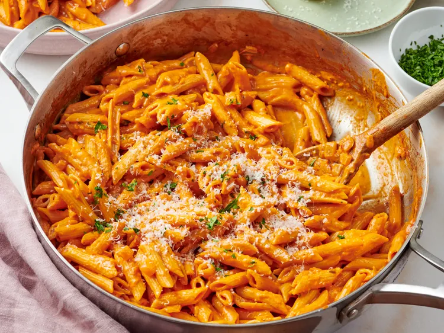

Ingredientes
Ponga a hervir una olla grande con agua ligeramente salada. Añada la pasta penne y cocínela según las instrucciones del paquete hasta que esté al dente, unos 9 minutos. Retire 1/2 taza del agua de cocción de la pasta y reserve. Escurra la pasta.
Mientras tanto, calienta el aceite de oliva en una sartén grande a fuego medio-bajo y cocina la cebolla hasta que esté blanda y translúcida, unos 5 minutos. Agrega el ajo y cocina hasta que desprenda aroma, unos 30 segundos. Incorpora la pasta de tomate y cocina, revolviendo, hasta que la pasta de tomate empiece a oscurecerse y se integre bien con la cebolla, de 2 a 3 minutos.
Vierta la crema espesa y el vodka y cocine, revolviendo, durante 2 minutos hasta que el alcohol se evapore. Incorpore las hojuelas de pimiento rojo y cocine, revolviendo, hasta que estén bien mezcladas. Sazone con sal y pimienta.
Incorpore la mantequilla y remueva hasta que se derrita. Añada la pasta escurrida y 1/4 de taza del agua de cocción. Añada más agua de cocción según el espesor de la salsa. Incorpore queso parmesano recién rallado, pruebe y ajuste la sazón con sal y pimienta. Continúe cocinando de 1 a 2 minutos a fuego lento hasta que esté bien integrado.